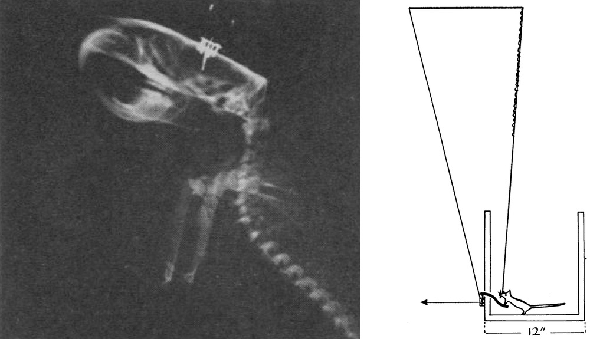

Findings from studies investigating only stimulants (generally cocaine or amphetamine) were often discussed as though they applied to all addictions, even though there was no evidence for such an assumption. (Nutt et al. 2015)
Is it possible to get all the facts right, but still get the explanation wrong? That can happen to anyone. Nutt et al. (2015), writing in Nature Reviews Neuroscience, argue that it’s happened to an entire subfield, the neuroscience of substance use and addiction.

The neuroscience of substance use is grounded in Pavlovian concepts that wield powerful and persistent influences over the behavioral sciences. The story begins over 60 years ago when James Olds and Peter Milner inserted wires into the septal areas of the brains of four rats. The rats were then tested in a Skinner box with a lever (above, right). When the rats pressed the lever, a small voltage was applied to the wire. The rats responded by pressing the lever hundreds of times an hour. Olds and Milner concluded that the “control exercised over the animal’s behavior by means of this reward is extreme, possibly exceeding that exercised by any other reward previously used in animal experimentation” (Old and Milner 1954, p. 426).
The critical neurons turned out to be dopamine neurons in the midbrain. It was also discovered that various drugs of abuse increase dopamine release in this region. These and other findings lead Roy Wise and colleagues to propose the “hedonia” hypothesis: dopamine encoded reward itself; it was a “pleasure” molecule. If so, the role of dopamine in both reinforcement learning and drug use was clear: behaviors that resulted in food or sex – “natural” rewards – cause the release of dopamine in the MDS, whose pleasurable effects reinforce those behaviors. Drugs of abuse – conceptualized as “artificial” rewards that “hijack” the brain – also release dopamine, whose pleasurable effects similarly reinforce drug use.
Thus were born two intimately intertwined theories: the dopamine theory of reinforcement learning, and the dopamine theory of substance use and addiction, each deeply rooted in the stimulus-response paradigm at the core of behaviorism.
Twenty years of experiments using these and other methods showed that although dopamine plays some important role in reinforcement learning, it does not directly mediate the hedonic effects of rewards. In an interview in Science (Wickelgren, 1997), Roy Wise acknowledged that the hedonia hypothesis was wrong (time to update the NIDA website!).
One alternative hypothesis is that mesolimbic dopamine mediates wanting, not liking. Key evidence for this hypothesis is that after 6-hydroxydopamine lesioning of their mesolimbic dopamine neurons, rats still seem to enjoy food and sex, but are no longer motivated to seek them out (Berridge 1996). On this view, drug-induced dopamine release hijacks the brain by inducing craving for the drug, but not pleasure at consuming it (Robinson and Berridge, 1993).
Another influential idea, based on electrophysiological recordings of dopamine neurons in monkeys, and with roots in the experiments of Pavlov, is that the phasic activity of mesolimbic dopamine neurons encodes reward prediction error: dopamine neurons spike with unexpected rewards, and their activity is suppressed with unexpected absence of rewards. But they don’t spike when monkeys get an expected reward (for an exhaustive review, see Schultz, in press). According to Glimcher (2011, p. 15647), who eloquently defends this theory,
[I]ntertwining of theory and experiment now suggests very clearly that the phasic activity of the midbrain dopamine neurons provides a global mechanism for synaptic modification. These synaptic modifications, in turn, provide the mechanistic underpinning for a specific class of reinforcement learning mechanisms that now seem to underlie much of human and animal behavior. (emphasis added)
This ambitious theory has a harder time explaining how drugs hijack the brain (see Schultz, 2011 for some ideas).
Enter David Nutt and colleagues. Whatever the role of dopamine in reinforcement learning, Nutt et al. argue there are problems with the dopamine theory of drug use that have been swept under the carpet. Foremost among these is that, in experiments in humans that directly measure mesolimbic dopamine concentrations using PET or SPECT scans, some popular drugs of abuse do not increase mesolimbic dopamine much. Here is the key figure in their paper (more negative binding values indicate increased dopamine release):
As you can see, whereas amphetamine clearly increases dopamine, morphine and THC mostly do not (and results for nicotine are variable).
Nutt et al. argue that the relationship between stimulants and dopamine is not surprising because these drugs act directly on the dopamine system:
[W]hat was overlooked was the fact that methylphenidate and other stimulants act specifically on the dopamine system to increase dopamine levels. Thus, dopamine must be the proximal mediator of any psychological response to stimulants, and it should not be surprising that the change in striatal dopamine release correlates with the subjective high. (emphasis added)
Lower availability of D2/D3 receptors is consistently associated with addiction to some drugs, like cocaine, which supports the dopamine theory of drug use. But this association also presents a paradox:
If dopamine acting through D2 and/or D3 receptors is necessary to experience a drug high, then lower receptor availability should result in less-rewarding rather than more-rewarding drug effects.
Lower D2/D3 availability is also not consistently associated with addiction to other drugs, such as opiates, cannabis, or nicotine.
Nutt et al. conclude:
Tellingly, the dopamine theory has not led to any new treatments for addiction. We suggest that the role of dopamine in addiction is more complicated than the role proposed in the dopamine theory of reward. We propose that dopamine has a central role in addiction to stimulant drugs, which act directly via the dopamine system, but that it has a less important role, if any, in mediating addiction to other drugs, particularly opiates and cannabis.
Unlike Nutt et al., I don’t fault drug researchers for the dopamine theory. On the contrary, good theories are ambitious, with clear predictions that can be falsified by evidence. It is also easy, when in the grip of a compelling theory with much supporting evidence, to dismiss findings that contradict the theory.
Still, by highlighting evidence that contradicts the dominant dopamine model of drug use, Nutt et al. bolster our critique of the dopamine model’s evolutionary rationale that drugs are evolutionary novel, provide no benefits, and “hijack” the brain via these dopamine circuits.
The image at the top of this post epitomizes an approach to studying evolved animal mechanisms, such as reinforcement learning mechanisms, that often abstracts away critical details of the environment that selected for the evolved mechanism. Most popular drugs are plant defensive chemicals, or their close chemical analogs (alcohol is the exception). Plant defensive compounds have infused animal diets since at least the time terrestrial plants and animals evolved, about 400 million years ago. My colleagues and I argue that neurobiological theories of drug use, and perhaps also the related theories that ground much animal behavior in a single neurotransmitter, would profit by incorporating, rather than ignoring, the long co-evolution of plants and animals.
References
Berridge, K. C. (1996). Food reward: brain substrates of wanting and liking. Neuroscience & Biobehavioral Reviews, 20(1), 1-25.
Glimcher, P. W. (2011). Colloquium Paper: Understanding dopamine and reinforcement learning: The dopamine reward prediction error hypothesis. Proceedings of the National Academy of Sciences, 108(Supplement_3), 15647–15654. http://doi.org/10.1073/pnas.1014269108
Hagen, E. H., Roulette, C. J., & Sullivan, R. J. (2013). Explaining Human Recreational Use of “pesticides”: The Neurotoxin Regulation Model of Substance Use vs. the Hijack Model and Implications for Age and Sex Differences in Drug Consumption. Frontiers in Psychiatry, 4. http://doi.org/10.3389/fpsyt.2013.00142
Olds, J. (1958). Self-Stimulation of the Brain Its Use To Study Local Effects of Hunger, Sex, and Drugs. Science, 127(3294), 315–324. http://doi.org/10.1126/science.127.3294.315
Olds, J., & Milner, P. (1954). Positive reinforcement produced by electrical stimulation of septal area and other regions of rat brain. Journal of Comparative and Physiological Psychology, 47(6), 419–427.
Nutt, D. J., Lingford-Hughes, A., Erritzoe, D., & Stokes, P. R. (2015). The dopamine theory of addiction: 40 years of highs and lows. Nature Reviews Neuroscience, 16(5), 305-312. http://doi.org/10.1038/nrn3939
Robinson, T. E., & Berridge, K. C. (1993). The neural basis of drug craving: an incentive-sensitization theory of addiction. Brain Research Reviews, 18(3), 247-291.
Schultz, W. (2011). Potential Vulnerabilities of Neuronal Reward, Risk, and Decision Mechanisms to Addictive Drugs. Neuron, 69(4), 603–617. http://doi.org/10.1016/j.neuron.2011.02.014
Schultz, W. (in press). Neuronal reward and decision signals: from theories to data. Physiological Reviews. http://www.pdn.cam.ac.uk/staff/schultz/pdfs%20website/2015%20Schultz%20PhysiolRev%20in%20press.pdf
Wickelgren, I. (1997). Getting the brain’s attention. Science, 278(5335), 35-37.
Figure 1: Modified from Olds, 1958.
Figure 2: From Nutt et al., 2015.
Figure 3: Modified from “Carboniferous Pteridophyta (After Dana)” from a the 1896 edition of Underwood’s Native Ferns and their Allies.